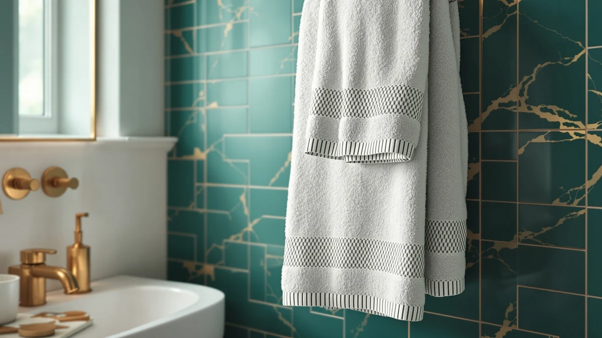

How to Install Bathroom Towel Hanger (2026)
Prices and picks verified as of August 2026. Independent, reader-supported reviews.


Things to Know Before You Buy
- The plate needs two anchors, not one. Most swing-arm hangers mount with two screws spaced 2 to 3 inches apart, so both need a stud or a rated anchor to carry the swinging load.
- Swing clearance matters as much as height. Mark the wall with the arm fully extended before you drill, since a hanger placed too close to a door or vanity catches on the swing.
- Anchors rated for 15 pounds beat the plastic cones in the box. A hanger loaded with three wet towels pulls harder than the weight looks, especially when someone tugs a towel free.
- 48 inches works for most adults. Drop to 40 inches for a kids bathroom, and check the arm swings clear of the toilet tank or shower door before marking final holes.
- Budget 30 minutes and about $12 in parts. Upgraded anchors add a few dollars over the hardware in the box and save you from patching torn-out drywall later.
This guide walks you through how to install bathroom towel hanger hardware in five steps, and a swing-arm hanger goes up faster than a towel bar because the whole unit anchors to a single compact plate instead of two separate posts spaced a foot or more apart. A swing-arm hanger holds three or four towels at once by fanning out from the wall, which makes it a good fit for a small bathroom that lacks space for a full towel bar.
I have installed swing-arm hangers in two rental bathrooms where a fixed bar would have blocked the door swing, and the mounting plate is the part that decides whether the hanger survives daily use. Anchor the plate into a stud or a rated drywall anchor, and the arm folds flat against the wall and swings out for towels without a wobble for years. Skip that step and rely on the small plastic anchors in the box, and the plate works loose within a few weeks of towels swinging on the arm. Set aside 30 minutes and about $12 in hardware, and you will hang a hanger that holds up to daily pulling and swinging.
What You'll Need
- Supplies: metal toggle or self-drilling drywall anchors rated for 15 pounds, painter's tape, mounting screws (usually included with the towel hanger)
- Tools: power drill with a 3/16-inch bit, torpedo level, stud finder, Phillips screwdriver, pencil, tape measure
Step 1: Choose the height and mark the mounting plate
Standard height for a bathroom towel hanger runs about 48 inches from the finished floor to the center of the plate, the same reach that works for a towel bar. Drop to 40 inches in a kids bathroom, and hold the arm fully extended before you commit to a spot, since a folded hanger can look clear of the door while the open arm catches it every time.
Set the base plate against the wall at that height and rest a torpedo level across the top edge. Once the bubble centers, mark both mounting holes with a pencil, then stick a strip of painter's tape over dark paint first if pencil marks won't show.
Check the swing radius one more time before drilling. Extend the arm fully and trace where it lands, because a hanger mounted an inch too close to a vanity or shower door will bump every time someone swings it open.
Step 2: Find a stud or plan your anchors
Slide a stud finder across the wall over both pencil marks. A screw driven straight into a stud outperforms any anchor, and since the two mounting holes on most swing-arm hangers sit 2 to 3 inches apart, you will often catch a stud on both or neither.
When the wall reads hollow at both marks, skip the thin plastic cone anchors packed with most hangers. Pick up metal toggle or self-drilling anchors rated for 15 pounds or more, since the swinging arm puts more stress on the plate than a fixed bar ever does.
No stud finder on hand? Tap the wall with a knuckle near each mark. A solid, short knock means a stud sits behind it, while a hollow, boomy sound means you are anchoring into open drywall.
Step 3: Drill the pilot holes and set the anchors
Chuck a 3/16-inch bit for standard drywall anchors, or match the bit size listed on your anchor packaging. Drill straight into each pencil mark and hold the drill level so the hole runs perpendicular to the wall instead of angling off.
Tap toggle-style anchors in until the flange sits flush with the drywall, or drive self-drilling anchors with a Phillips screwdriver until they stop turning. Stop the moment each anchor seats, because an over-driven anchor crushes the drywall behind it and loses much of its grip.
Drilling into tile changes the approach. Cover the mark with painter's tape, load a carbide or diamond bit, and run the drill at low speed with light pressure until the bit clears the glaze. Switch back to a standard bit once you reach the wall behind the tile.
Step 4: Screw the base plate to the wall
Hold the base plate over the anchors, thread both screws through the mounting holes, and drive them in until the plate sits flat against the wall. Snug beats tight here. Overtightening cracks the drywall face and strips the anchor threads before the hanger ever holds a towel.
Check the plate with your level one more time, since anchors can shift slightly while you drive the screws. A plate mounted a few degrees off reads as crooked the moment you hang the arm and stand back.
If your hanger ships with a decorative cover plate that snaps over the screws, leave it off until the next step. You want clear access to the pivot hardware while you attach the arm.
Step 5: Attach the arm and test the swing
Slide or screw the swing arm onto the base plate's pivot point, following the hardware that came in the box. Most arms lock on with a single pin or setscrew, so tighten it enough to remove wobble but not so much that the arm binds and refuses to swing.
Open and close the arm through its full range a few times to confirm it moves freely and clears the door, vanity, and shower glass you checked in step one. Then grab the extended arm and pull down with about 10 pounds of force, roughly the pull of two soaked towels plus someone leaning on it while getting dressed.
A hanger installed on rated anchors holds firm under that load without flexing or creaking. Snap on the cover plate if your model has one, hang your towels, and wipe away the pencil marks with a damp cloth.
Common Mistakes to Avoid
The plastic cone anchors packed with most swing-arm hangers cause the majority of failures. They grip drywall with a few shallow ribs, and the constant swinging motion works them loose faster than a fixed towel bar ever would. Swap them for metal toggle or self-drilling anchors rated for 15 pounds before you drill, since replacing anchors after the holes wallow out means patching drywall and starting over.
Skipping the swing-radius check ranks second. A hanger that looks clear when folded flat can smack a vanity edge or shower door the first time someone swings it open, and moving a mounted plate means patching two more holes. Extend the arm fully before you mark anything, then walk through the motion one more time before you drill.
Mounting only one anchor causes trouble too. Some installers find a stud under one hole and skip the anchor on the second, assuming one strong point carries the load. It doesn't. Both mounting screws share the weight and the swinging force, so anchor the second hole properly even when the first lands on solid wood.
Overtightening the pivot hardware creates a quieter problem. Crank the pin or setscrew down too far and the arm binds, refusing to swing smoothly or snapping back with force when it finally releases. Tighten until the wobble disappears, then stop and test the motion before you call the job finished.
Our Top Picks
A freshly hung towel hanger deserves towels light enough to swing freely and thick enough to dry someone off in one pass. These three sets fit the arm you installed, from an easy hang-and-fold plush pick to a full matched set for the whole bathroom.

Editor’s Pick
Luxury White Bath Towel Set
This set folds thin enough that three towels swing freely on the arm without crowding, and the ring-spun cotton dries a family fast after a shower.
$39.99
Check Price on Amazon
Best Value
American Soft Linen Luxury 6
Six pieces at this price cover a hanger built for multiple towels, and the lighter weave keeps the arm swinging smoothly instead of sagging under soaked cotton.
$35.99
Check Price on Amazon
Premium Choice
Utopia Towels 8 Piece Luxury
Eight pieces outfit the whole bathroom in one match, with bath towels sized for the hanger arm and hand towels left over for the sink.
$34.99
Check Price on AmazonFrequently Asked Questions
What is the standard height for a bathroom towel hanger?
Mount the base plate about 48 inches from the finished floor to the center of the plate, the same reach used for a towel bar. Drop to around 40 inches in a kids bathroom, and hold the arm extended before marking, since the open arm needs more clearance than the folded hanger.
Can you install a swing-arm towel hanger without hitting a stud?
Yes. Metal toggle or self-drilling drywall anchors rated for 15 pounds or more will carry a swing-arm hanger in hollow drywall for years. Skip the thin plastic cone anchors that ship in most boxes, since the swinging motion loosens them faster than it would a fixed bar.
Why does my towel hanger arm feel stiff or won't swing?
An overtightened pivot pin or setscrew is the usual cause. Back the hardware off a quarter turn at a time until the arm swings freely without wobbling. If the arm still binds, remove it and check for paint or drywall dust trapped in the pivot joint.
How much weight does a towel hanger need to hold?
A soaked bath towel weighs around 3 pounds, so a hanger loaded with three towels carries close to 9 pounds before anyone touches it. People also pull and lean on the arm while drying off, which spikes the load well past the towel weight, so anchors rated for 15 pounds give you the margin daily use demands.
Can you install a bathroom towel hanger on tile?
Yes. Cover each mark with painter's tape, load a carbide or diamond bit, and drill at low speed with light pressure until the bit clears the glaze. Keep the hammer function off, since hammering cracks the tile, and switch to a standard bit once you reach the wall behind it.
Verdict
Learning how to install bathroom towel hanger hardware comes down to a level mounting plate, anchors rated for the swinging load, and a swing-radius check before you ever pick up the drill. Mark the height at 48 inches, hunt for a stud across both holes, and reach for metal toggle anchors when the wall comes up hollow instead of trusting the plastic cones in the box. The drilling and screwing take ten minutes. Checking the swing clearance and testing the load take the rest, and that extra care decides whether the hanger holds for years or works loose by the end of the month.
Once the hardware holds, hang towels built for it. The White Classic set folds thin enough to swing freely with three towels loaded at once, and it dries fast enough that a small bathroom never picks up a musty smell between showers. Pull down on the extended arm one more time before you call the job done. A hanger installed on rated anchors carries daily use without a wobble.